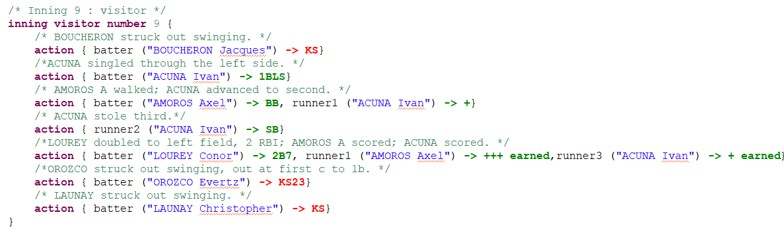

La coloration syntaxique
Les différents éléments de la saisie (mots-clés, noms, nombres, commentaires, etc.) sont affichés dans des
couleurs distinctes. Le texte devient plus lisible, et une erreur de frappe se repère plus facilement.

Dans l’éditeur de match, chaque type d’élément de la saisie s’affiche dans une couleur différente. Cette
coloration est appliquée automatiquement, au fur et à mesure de la frappe. Elle permet de lire plus facilement le texte et de
repérer d’un coup d’œil une erreur de saisie : un mot qui n’a pas la couleur attendue est souvent un mot mal écrit ou mal placé.
Les couleurs qui sont utilisées peuvent personnalisée dans les préférences de l’outil.
Les éléments suivants sont distingués :
- Les mots-clés (en mauve : ce sont les mots réservés du langage de scorage, qui décrivent les actions du match. Ils sont
reconnus par l’outil, et leur couleur confirme qu’ils sont correctement écrits.
- Les noms propres (en bleu) : ce sont les noms des équipes et des joueurs. Ils se distinguent ainsi des mots-clés et du
reste de la saisie.
- Les nombres (en gris) : ce sont, par exemple, les numéros de joueurs ou les valeurs chiffrées d’une action. Ils
ressortent immédiatement dans le texte.
- Les commentaires (en gris) : ce sont les notes que l’utilisateur ajoute pour lui-même. Ils sont affichés de façon
discrète, car ils ne sont pas pris en compte dans le scorage.
- Les retraits (en rouge) : On peut compter plus rapidement le nombre de retraits dans une manche.